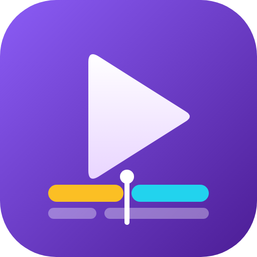

Política de Privacidade / Privacy Policy
BestEditorÚltima atualização / Last updated: 5 de novembro de 2026 / November 5, 2026
1. Quem somos
O BestEditor é um aplicativo pessoal que roda localmente, no computador de quem o usa. Não existe servidor do BestEditor na internet: nenhum dado é enviado para nós.
2. Dados que o app acessa
Quando você conecta um canal do YouTube (login com Google / OAuth), o app recebe permissão para:
youtube.upload— enviar vídeos e capas para o seu canal;youtube.readonly— ler o nome do canal e a lista dos seus vídeos recentes (título, data, status, visualizações, curtidas e comentários).
3. Como os dados são usados
Somente para: enviar os vídeos que você escolheu, nos horários que você definiu; mostrar seus vídeos recentes; evitar títulos repetidos; e sugerir títulos parecidos com os que funcionaram no seu canal.
4. Onde ficam guardados
Os tokens de acesso e a lista de vídeos ficam apenas em arquivos no seu computador (pasta youtube/ do app). Não são vendidos, compartilhados, nem enviados a terceiros, e não são usados para publicidade.
5. Uso limitado (Google API Services)
O uso e a transferência de informações recebidas das APIs do Google seguem a Política de Dados do Usuário dos Serviços de API do Google, incluindo os requisitos de Uso Limitado.
6. Como revogar o acesso
Clique em “desconectar” no app (apaga o token do seu computador) e/ou remova o acesso em myaccount.google.com/permissions. Para apagar tudo, exclua a pasta youtube/ do app.
7. YouTube e Google
Ao usar o app, você também está sujeito à Política de Privacidade do Google.
English
Who we are. BestEditor is a personal application that runs locally on the user's own computer. There is no BestEditor server; no data is sent to us.
Data accessed. When you connect a YouTube channel via Google OAuth, the app is granted youtube.upload (upload videos and thumbnails to your channel) and youtube.readonly (read your channel name and your recent videos: title, date, status, views, likes and comment counts).
Use. Only to upload the videos you selected at the times you set, show your recent videos, prevent duplicate titles, and suggest titles similar to ones that performed well on your channel.
Storage and sharing. Access tokens and video lists are stored only in files on your computer. They are never sold, shared with or transferred to third parties, and are not used for advertising.
Limited Use. BestEditor's use and transfer of information received from Google APIs adheres to the Google API Services User Data Policy, including the Limited Use requirements.
Revoking access. Click “disconnect” in the app and/or remove access at myaccount.google.com/permissions. Delete the app's youtube/ folder to erase all stored data.
Google. See also the Google Privacy Policy.